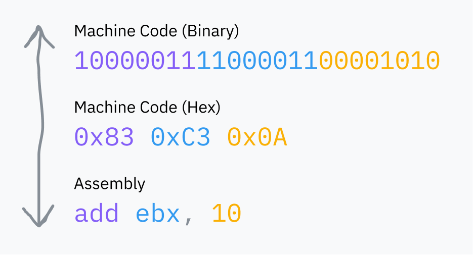

Introducción a la programación
Para aquellos que no saben casi nada de programar veo conveniente una pequeña explicación introductoria sobre qué es esto de programar y qué tipo de programación hace uno en GDScript.
Programación
Todos tenemos unas máquinas muy listas que nos permiten hacer muchas cosas como jugar al Wii Sports Resort, muy importante.
Pero realmente estas máquinas no son tan listas. Nuestros ordenadores necesitan que alguien les de instrucciones que puedan entender. Esto sería una cadena de unos y ceros que nuestro ordenador interpreta como una operación.

Podemos programar en unos y ceros o en su representación en ensamblador, lo cual es lo mismo pero un poco más legible. Pero gracias a dios los lenguajes de programación se inventaron.
Básicamente creamos un programa que lea instrucciones en un lenguaje entendible por humanos como por ejemplo nuestro ya conocido print("Hola Mundo") y lo traduce a los unos y ceros correspondientes.
GDScript es un lenguaje de programación INTERPRETADO
Esto quiere decir que un intérprete (Godot en nuestro caso), irá leyendo, de arriba a abajo, línea a línea nuestro código interpretando y ejecutando lo que cada una signifique.
Como quien sigue una receta, nuestro cocinero Godot irá siguiendo los pasos poco a poco. Si tu receta va a llevar a la sartén una explosión de aceite, no lo sabrá hasta que sea demasiado tarde :d
Programar ejemplo tonto
Siguiendo el símil de la receta podemos ver un tontito ejemplo comparativo.
Receta Tomates de la abuela
1. Coge un tomate de la bolsa de tomates.
2. Corta el tomate.
3. Echa el tomate a la sartén.
4. Freir tomate.
Programa Tomates de la abuela
Lamento si para algunos estas cosas pueden ser una trivialidad, pero igual a alguno le ha podido venir bien para ir haciéndose una idea de qué va esto ;)